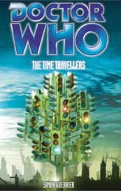

<html>

<head>
<meta http-equiv="Content-Language" content="en-gb">
<meta HTTP-EQUIV="Content-Type" CONTENT="text/html; charset=iso-8859-1">
<meta NAME="keywords" CONTENT="enter keywords here">
<meta NAME="description" CONTENT="enter a description here">
<meta NAME="Simon Guerrier" CONTENT="enter your name here">
<meta NAME="generator" CONTENT="Microsoft FrontPage 5.0">
<meta name="ProgId" content="FrontPage.Editor.Document">
<title>The Cloister Library - The Time Travellers</title>
</head>

<body TEXT="#CCCCFF" LINK="#99BAFF" VLINK="#9999FF" BGCOLOR="#5A0EC2" TOPMARGIN="10" LEFTMARGIN="10" RIGHTMARGIN="10" MARGINWIDTH="0" MARGINHEIGHT="0" onload="dynAnimation()">

<table WIDTH="100%" CELLPADDING="0" CELLSPACING="0" BORDER="0">
  <tr>
    <td WIDTH="100%" ALIGN="LEFT" VALIGN="TOP">
    
    <table WIDTH="100%" CELLPADDING="0" CELLSPACING="0" BORDER="0">
  <tr>
  
  <td WIDTH="20%" ALIGN="LEFT" VALIGN="TOP">
  <a onmouseover="document['fpAnimswapImgFP1'].imgRolln=document['fpAnimswapImgFP1'].src;document['fpAnimswapImgFP1'].src=document['fpAnimswapImgFP1'].lowsrc;" onmouseout="document['fpAnimswapImgFP1'].src=document['fpAnimswapImgFP1'].imgRolln" href="index.html#1doc">
  </a></td>
  
    <td WIDTH="80%" ALIGN="LEFT" VALIGN="TOP">
    
    <p align="center">

<B>
<FONT FACE="verdana,arial,geneva" SIZE="6">
The Time Travellers
</FONT>
<BR>
<FONT FACE="verdana,arial,geneva" SIZE="4">
by
</FONT>
<FONT FACE="verdana,arial,geneva" SIZE="5">
Simon Guerrier
</FONT>
</B>
<FONT FACE="verdana,arial,geneva" SIZE="-1">
<BR>
<BR>
<B>Publisher:</B> BBC

<BR>
<B>ISBN:</B> - 563 48633 3

</font>
</td>
</tr>
</table>

</font>
    <table WIDTH="100%" CELLPADDING="10" CELLSPACING="10" BORDER="0" style="border-collapse: collapse" bordercolor="#111111">
      <tr>
        <td WIDTH="100%" ALIGN="LEFT" VALIGN="TOP">
        <font face="verdana,arial,geneva" size="-1">
        <ul>
          <p>&nbsp;</p>

<B><P>BASIC PLOT<BR></B>
When the TARDIS touches down in London, 2006, schoolteachers Ian and Barbara are eager to explore their own future. But they have arrived in the middle of a war, a war that has left London a ruin. Mistaken for vagrants, and with no way of proving otherwise, the Doctor's granddaughter and companions find themselves in the execution block on the Isle of Dogs. The Doctor has no choice but to help the military refine its ultimate weapon. The British Army has discovered time travel. And the consequences are already terrible.

<B><P>DOCTOR<BR></B>
First.

<B><P>COMPANIONS<BR></B>
Ian, Barbara and Susan.

<B><P>MATERIALISATION CIRCUIT<BR></B>
Pg 10/12 In the Canary Wharf railway station.

<B><P>PREPARATORY READING<BR></B>
This is a sort of sequel to the War Machines, only one where the Doctor never interfered, so it helps to be familiar with that. 

<P>Knowledge of the time travel issues from The Aztecs would also be helpful.

<B><P>CONTINUITY REFERENCES<BR></B>
Pg 22 "I learned my lesson in Mexico. You can't change history." The Aztecs.

<P>Pg 36 "Travelling with the Doctor, she still kept a timeline - in her head at least. 1289, 1794, 1692..." Marco Polo, The Reign of Terror, <a href="witch.htm">The Witch Hunters</a>. [With thanks to Stephen Gray.]

<P>Pg 55 "'Without fixing space as well as time, you'd be throwing the subject out into a vaccum.' 'D and E!' exclaimed Ian. They're interlinked.'" This explains how the fifth dimension can be Space, from An Unearthly Child.

<P>Pg 64 "The Doctor said that we couldn't rewrite history, even if we wanted to." The Aztecs.

<P>"Back in Mexico, had he lied to her?" The Aztecs.

<P>Pg 75 "The machine-people they say live on the South Pole." The Tenth Planet.

<P>Pg 133 "A computing machine, back in thr Sixties. It could talk to other machines. Was right here in London  and it took over the world." WOTAN, The War Machines.

<P>Pg 185 "'That's why you don't change history,' she said. 'It's not that you can't, you just won't.'" The Aztecs.

<P>Pgs 185-186 "'Who can ever know what you've done, what you've changed?' He smiled sadly. 'There are those who can,' he said." The Time Lords

<P>Pg 186 "But it will be noticed, it will catch up with us, sooner or later. At least, it will catch up with me." The War Games.

<P>"'I shall have to find a home for Susan. Somewhere safe for her.' [...] 'But you must understand: Susan won't ever leave you. Not voluntarily.' 'No,' said the Doctor, shaking his head. He looked broken. 'I don't believe she would.'" The Dalek Invasion of Earth.

<P>Pg 195 "We watch it all on the scanner. My people, you see.." The Time Lords.

<P>Pg 196 "He knew what she wanted to say: that the Doctor had lied to them, that time in Mexico." The Aztecs.

<P>Pg 237 "Something that looked like the horoloscope, but more compact, drooled fibre optic cables over what might have been an anchoring unit. [...] 'Where did you happen across it?' Townsend beamed with pride. 'Cellar of a school in East London.'" This is the Dalek materialisation machine from Remembrance of the Daleks.

<P>Pg He reached out and withdrew a gold-coloured pipe, leant against the stacked pieces. The pipe was half a metre in length, and the old man and Susan both flinched on seeing it had a trumpet-like end. 'We call that the sink plunger,' laughed Townsend." Remembrance of the Daleks, The Daleks.

<P>Pg 264 "You stand outside the junkyard, waiting for him to turn up." An Unearthly Child.

<P>Pg 266 "28 July, 1966 People are leaving London. The ones the Machine hasn't taken over are pouring from the city" The War Machines.

<P>Pg 277 "We've not always been a police box, you know. There was a Corinthian column and a Christmas tree and -" An Unearthly Child.

<P>Pg 282 "The bus conductor regarded them coolly. 'Where've you been, on the moon?' Ian grinned. 'No, but you're getting warm.'" The Chase.

<B><P>OLD FRIENDS AND OLD ENEMIES<BR></B>
None, surprisingly.

<B><P>NEW FRIENDS AND NEW ENEMIES<BR></B>
Griffiths, Louise Banford, Professor Kelly, townsend, multiple Andrews.

<a name=cock><B><P>CONTINUITY COCK-UPS<BR></B></a>
<OL>
<LI>"A tangle of traffic lights all stemming from a single trunk." This also appears on the cover but what exactly is it? It can't be caused by the time-travel experiments and it's never explained.

<LI>Pg 25 "'Chesteron,' said Ian." Which is an odd thing for him to say, since his name is Chesterton.

<LI>Pg 47 St Paul's Cathedral stands unscathed, unlike most buildings around it. Then, on page 72, the entire building is destroyed, with the otherwise intact dome slipping to the ground. However, on the cover, the cathedral is standing but damaged, with about a third of the dome destroyed. 

<LI>Speaking of the cover, it seems a bit odd that in this wartorn, parallel universe, where London has been under attack for decades, they still built the London Eye. Are children of this era so brave that they enjoy riding a giagantic ferris wheel in the middle of a blitz?

<LI>Pg 206 "It been fifty-three minutes,' added Susan." Huh?

<LI>Pg 256 "'When we first arrived, when we went to find a phone to tell them...' [...] 'We found a police box,' he said." The implication here is that the police box they found on page 24 was the TARDIS... except that a) it worked as an actual phone box and b) the TARDIS is currently at the bottom of a river. 

</ol>
<B><P>PLUGGING THE HOLES [Fan-wank theorizing of how to fix continuity cock-ups]<BR></B>
<OL>
<LI>Given that it's on the cover, it's very likely something the cover artist dreamed up to illustrate time travel in an abstract way that the author then felt the need to include as a literal thing in the book. Which is a shame really, as it cheapens the image. Joe Ford adds: Regarding the traffic light sculpture... it's actually in London! It's not an abstract illustration of time travel!

<LI>Ian wants to give a fake name, although foolishly he goes on to give his National Service number. And, despite his clever ruse, Kelly still knows his actual name from the phone call (pages 35 and 36).

<LI>It's a parallel universe, so maybe there are two cathedrals and the one we see on the cover isn't St Paul's.

<LI>Maybe it's actually a giant antenna, disguised as a ferris wheel. Although, when you think about it, that's a pretty poor disguise.

<LI>Susan is worried about the Doctor and it's affecting her speech.

<LI>They were wrong, it wasn't the TARDIS, it was just a police box after alll.

</ol>
<B><P>FEATURED ALIEN RACES<BR></B>
None.

<B><P>FEATURED LOCATIONS<BR></B>
Pg 5 Alternate London, September 16, 1967.

<P>Pg 36 Alternate London, June 2006.

<P>Pg 199 West India Quay, Alternate London, October 15, 1972 (page 207).

<P>Pg 261 London, July 14, 1948.

<P>Pg 262 London, July 17, 1948.

<P>London, September 29, 1948.

<P>Pg 263 London, May 14, 1954.

<P>London, October 11, 1962.

<P>Pg 264 London, November 1, 1963.

<P>Pg 265 London, March 16, 1964.

<P>Pg 266 Alternate London, July 28 1966.

<P>Pg 267 Alternate London, April 18, 1971.

<P>Pg 267 Alternate London, October 17, 1972.

<P>Pg 282 London, back in the real timezone, June 26, 1965

<B><P>IN SUMMARY - Robert Smith?<BR></B>
It's hard to go wrong with the original TARDIS crew and this book doesn't disappoint. It's meaty, considering a time-travel ethical dilemma with subtlety and aplomb, and the characterisation is top notch. All the time-travel malarky and alternate universe stuff could so easily have gone horribly wrong, but the book is confident in itself and it works a treat. It's clear that the TARDIS crew are on a branch where they haven't stopped WOTAN, but the humans have time travel thanks to Remembrance... which might be a contradiction, but it might not. Instead, what we get is thoughtful and interested in using its alternate status to explore actual themes, rather than just posturing, as so many other such books do. This is fabulous stuff. 


</P>

        </ul>
        </font></td>
      </tr>
    </table>
    </font></td>
    <td WIDTH="280" ALIGN="LEFT" VALIGN="TOP">
    <table WIDTH="100%" BORDER="0" CELLSPACING="0" CELLPADDING="6">
      <tr>
        <td ALIGN="RIGHT" VALIGN="TOP">
        

        </td>
      </tr>
    </table>
    </td>
  </tr>
</table>
<table WIDTH="100%" CELLPADDING="3" CELLSPACING="0" BORDER="0">
  <tr>
    <td WIDTH="100%" ALIGN="CENTER" VALIGN="TOP"><hr SIZE="1" NOSHADE></td>
  </tr>
</table>
</body>
</html>
